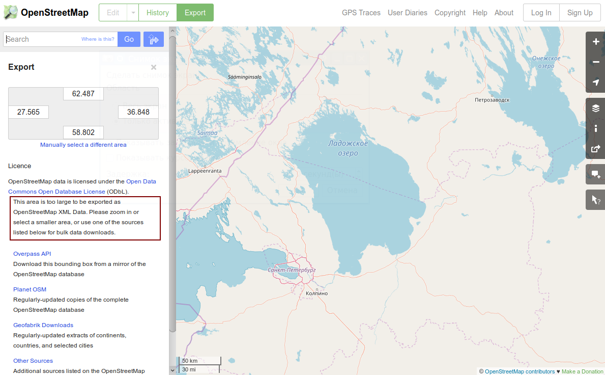
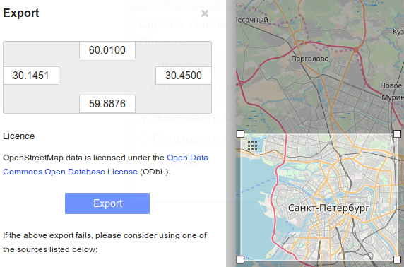

Для получения данных с в виде файла, на сайте OpenStreetMap.org сделана специальная страница:
https://www.openstreetmap.org/export
Можно просто зайти на нее, а можно открыть URL с дополнительными параметрами:
https://www.openstreetmap.org/export#map=7/60.697/32.206
где 7 - это уровень масштабирования, 60.697 и 32.206 - широта и долгота центральной точки на карте.

Серый прямоугольник с четырьмя числами - это экспортируемая область, она равна тому, что видно на экране. Но лучше нажать "Manually select a different area", и выбрать экспортируемую область мышкой.
В любом случае, выбирать надо так, чтобы исчезла выделенная на скриншоте надпись:
This area is too large to be exported as
OpenStreetMap XML Data. Please zoom in or
select a smaller area, or use one of the sources
listed below for bulk data downloads.
Эта надпись говорит о том, что выбранная область слишком большая для экспорта. Как только область будет достаточно маленькая, появится кнопка Export:

Как видно, для того чтобы появилась возможность экспорта, надо выбирать достаточно маленькую область. Такой город как Санкт-Петербург в выгрузку не влезет.
При нажатии на кнопку Export будет переход на URL вида:
https://www.openstreetmap.org/api/0.6/map?bbox=30.1451,59.8876,30.45,60.01
Здесь возможны разные варианты, зависящие от нескольких факторов и от фазы луны:
1. В браузере Firefox 52 может появится такая надпись:
Файл не найден
Firefox не может найти файл https://www.openstreetmap.org/api/0.6/map?bbox=30.1451,59.8876,30.45,60.01.
Проверьте правильность введённого имени файла, соответствие регистра и отсутствие других ошибок в имени файла.
Проверьте, не был ли файл переименован, удалён или перемещён.
2. В браузере Firefox 52, если долго тыкать обновление страницы, может появится такая надпись:
The parameter bbox is required, and must be of the form min_lon,min_lat,max_lon,max_lat.
Изучение формата API 0.6 и запроса "map" показывает, что запрос на самом деле составлен правильно. Почему openstreetmap.org не понимает свой собственный запрос - загадка.
3. В браузере Konqueror этот же запрос выдаст такой текст, который более похож на правду:
You requested too many nodes (limit is 50000). Either request a smaller area, or use planet.osm
То есть, похоже, что на openstreetmap.org идет какое-то несоответсвие допустимого к выгрузке размера карты в момент выбора области выгрузки и в момент самой выгрузки. Видимо это связано с тем, что невозможно однозначно связать размер выделенной на карте площади и допустимое количество экспортируемых объектов.
Поэтому выбирать надо еще меньшую область. Только когда на выбранной области объектов станет меньше допустимого количества (50 000), произойдет сохранение файла. Файл будет называться map.osm. Это файл в формате XML с кодировкой UTF-8, внутри которого можно найти подробности о формате выгрузки:
<osm version="0.6"
generator="CGImap 0.6.1 (31973 thorn-05.openstreetmap.org)"
copyright="OpenStreetMap and contributors"
attribution="http://www.openstreetmap.org/copyright"
license="http://opendatacommons.org/licenses/odbl/1-0/">
Язык внутри файла будет тот же, который виден на карте. То есть, если названия объектов были русскоязычные, то и внутри map.osm названия объектов тоже будут написаны по-русски кириллицей:
<tag k="name" v="Летний сад"/>
В любом случае, формат полученного файла называется OSM XML, и подробности о его структуре написаны на странице:
https://wiki.openstreetmap.org/wiki/OSM_XML
Таким образом, просто так получить OSM XML для нужной области на карте, через сервиса OPenStreetMap невозможно. Есть несколько сайтов, которые позволяют сделать выгрузку произвольной области за деньги. Так же можно попробовать поднять собственную инфраструктуру OSM-сервера, засинхронизироваться с актуальными данными, и сделать выгрузку собственными силами.
Формат OSM XML считается базовым для openstreetmap, однако существует более новый формат PBF ("Protocolbuffer Binary Format"):
https://wiki.openstreetmap.org/wiki/RU:PBF_Format
Формат PBF является бинарным, и он более компактно хранит данные. В среднем экономия по размеру получается более чем в два раза. Как выкачивать его с сайта openstreetmap.org пока непонятно. Возможно, что PBF доступен в готовых пакетах, выложенных на сайте Planet OSM:
https://planet.openstreetmap.org/
То есть, получить файл PBF произвольной области на сервисах, предоставляемых OpenStreetMap, простым путем также невозможно.
О том, как выкачивать нужные регионы через другие сервиса, можно узнать в статье "Где и как получить выгрузку нужного региона с OpenStreetMap".